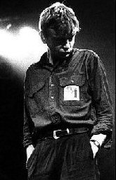

Thursday, June the 23rd, 2005
back to: title, date or indexes
Almost three decades on since the self-styled “Northern white crap that talks back” started making an unholy racket, Mrs Gubbins has belatedly discovered The Fall.
“I'm sure that underneath that scowling, grumpy exterior, Mark E Smith is a sweet little poppet,” she says, adding, “He's like a frolicsome puppy. I'd be proud to have him as my son.”
So taken is Mrs Gubbins with the ludicrously prolific Mancunian misanthrope that she has somehow managed to get hold of every record The Fall has ever made, and is holed up in the martello tower over by Loopy Copse. Passers-by report that she is playing the discs in chronological order, over and over again, all day and all night without pause. All attempts to get her to desist, or at least to turn the volume down on her supersonic booster sound system, are ignored. Stories are circulating that birds have been dropping out of the sky, deafened and dead, in the vicinity of the copse. The police seem helpless, possibly because they are very frightened of Mrs Gubbins after what happened at last year's Picnic For Detectives.
The octogenarian crone telephoned us yesterday. Although it was difficult to hear her, given that Hex Enduction Hour was blasting away in the background, she told us: “I have decided to issue a series of compact discs featuring the complete works of The Fall arranged for harp and flute. Doing them as instrumentals will of course mean jettisoning Mr Smith's lovely words, but I want to bring out the innate tweeness of the music.”

Smith : loveable poppet
Hooting Yard on the Air, June the 29th, 2005 : “Shem, Ham, Japheth and Minnie Crunlop” (starts around 11:56)